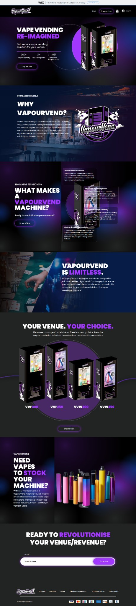

Real project · Ecommerce website
VapourVend
An ecommerce presentation designed to make a broad product range easier to browse and the route toward purchase easier to follow.
What the business needed
The store needed a clearer way to present its range so shoppers could move through product choices without the catalog feeling like an undifferentiated list.
What was built
The ecommerce experience was structured around clearer product discovery and a more consistent route from browsing to product-level decision and purchase action.
What is easier now
A shopper can move through the available range, reach relevant product information and continue toward the buying action with a clearer sense of where they are in the journey.